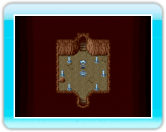

13 |
De Field Map |
 |
● “Field Map” bekijkenDruk op 
● Praten / zoekenAls je met iemand wilt praten of een voorwerp wilt onderzoeken, loop je er naartoe en druk je op

● “Save Points” (opslagpunten)Je kunt het spel opslaan op zogenaamde “Save Points”, deze vind je in dorpen en grotten. Je kunt het spel opslaan (-> pag. 21) en een tent of huisje gebruiken om uit te rusten als je op een opslagpunt bent.

● “Inns” (herbergen)
|
● VervoerNaarmate je vordert in het spel, krijg je de beschikking over verschillende vervoermiddelen waarmee je kunt rondreizen op de “Field Map”:
|
||||||||
 |
 |
 |